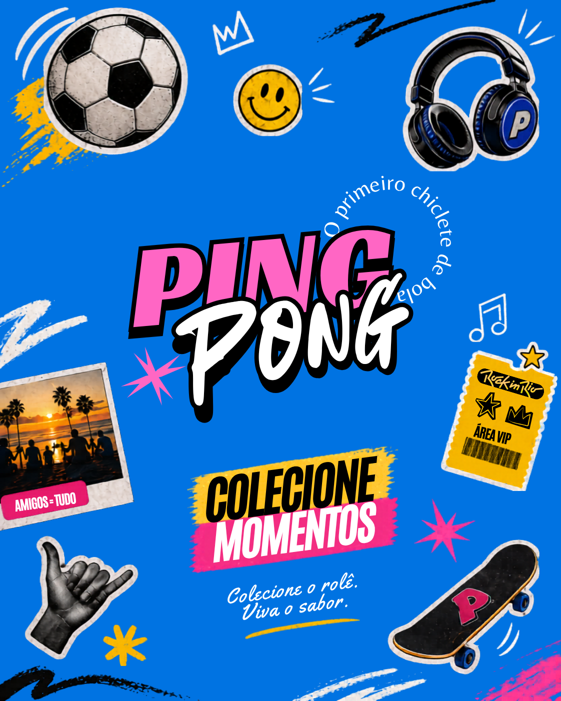

01
Campanha / Key Visual / Digital
Ping Pong
Relançamento visual com uma linguagem mais atual, vibrante e conectada ao público jovem, desdobrada em campanha e presença digital.

Projeto 01Identidade, campanha e aplicações trabalhando como um único sistema visual.